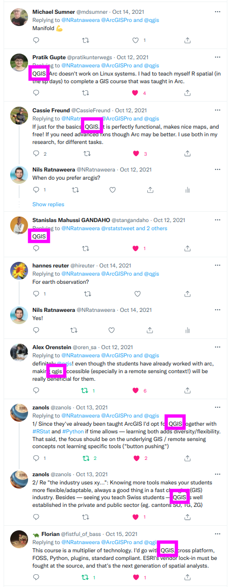
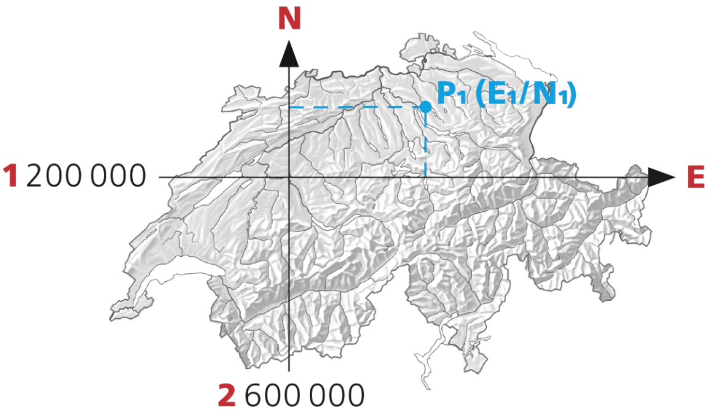
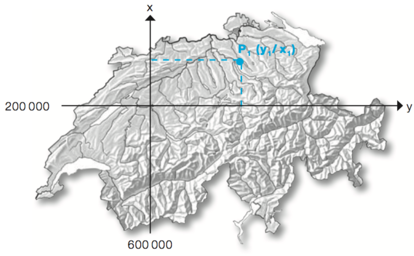

Nils Ratnaweera
ZHAW School of Life Sciences and Facility Management
Institute of Natural Resource Sciences
Grüentalstrasse 14
8820 Wädenswil
+41 (0) 58 934 55 63
rata@zhaw.ch
ZHAW School of Life Sciences and Facility Management
Institute of Natural Resource Sciences
Grüentalstrasse 14
8820 Wädenswil
+41 (0) 58 934 55 63
rata@zhaw.ch
Lesson 1
Introduction and first step in QGIS
Lesson 2
Raster and vector data in QGIS
Lesson 3
MCE and plugins in QGIS
Lesson 4
Sentinel data in QGIS
Inputs
Demos
Exercises
Workshops
I talk
I show
you do
we do
- Widely used and very popular
- Free and Open Source
- Cross-platform (Windows, MacOS & Linux)
We are developing a new course on remote sensing at our uni. What software would you primarily base it on: @ArcGISPro or @QGIS ? Pure #rstats or #python is not an option 😔 pic.twitter.com/G4I6izCqhF
— Nils Ratnaweera (@NRatnaweera) October 12, 2021

- Free as in beer
- Free as in speech
The transition will be hard
..brace yourselves
| ArcGIS |
QGIS | |
|---|---|---|
| Point of contact | Single | None/Multiple |
| Concept | Seamless | Modular |
| Community | Weak | Strong! |
| Documentation | Excellent | Poor (geeky) |
| User Interface (UX) | Sleek/responsive | Outdated |
| Compliance w/ Open Standards (OGC) | Poor | High |
| Support for data formats | Poor | Rich |
Workshop: First contact with QGIS

- They see the world as a sphere
- They use longitude and latitude
- They are useful for global data
- They are cumbersome for small-scale applications
- The most important is WGS84
- EPSG Code: 4326 (!)
- W-E -180 to +180
- S-N -90 to +90
- Switzerland
- W-E 5.9 - 10.4
- S-N 45.8 - 47.8
- They abstract the world to a 2D-plane
- They use x/y or E/N coordinates
- They are useful for local (e.g. National) data
- Cannot be used for global data
- The most important (for us) are
CH1903+LV95andCH1903 LV03

CH1903+ LV95 - EPSG Code: 2056 (!)
- new swiss coordinate system
- centered on Bern
- W-E
2'400'000-2'800'000 - S-N
1'100'000-1'300'000

CH1903 LV95 - EPSG Code: 21781 (!)
- old swiss coordinate system
- centered on Bern
- W-E
400'000-800'000 - S-N
100'000-300'000
Demo: Raster data in QGIS

- a better alternative to the limited and proprietery formats shapefile and geodatabase
- can contain vector and raster data
- can contain multiple layers
Exercise:
Import the raster datasets into QGIS and play around with symobology
Demo: vector data in QGIS
Exercise: Import the vector datasets into QGIS
Exclusion areas
- Lakes
- National protected areas
- Minimum distance of 200 m from existing settlement areas
Areas of interest
- Sufficient wind potential
- Low risk of icing
- Easy access (existing road and low gradient)


Exercise: Complete the MCA
| Class | Windspeed (dm/s) | Icing Frequency (d/a) | Slope (Degrees) | Distance to Roads |
|---|---|---|---|---|
| 1 | 0- 35 | >34 | >20 | >2'000 |
| 2 | 35-45 | 26-34 | 15-20 | 1'500-2'000 |
| 3 | 45-55 | 18-26 | 10-15 | 1'000-1'500 |
| 4 | 55-65 | 10-18 | 5-10 | 500-1'000 |
| 5 | >65 | 0-10 | 0-5 | 0-500 |
- Vanilla QGIS is lightweight with limited features
- Additional features are developped by the community
- These features are implemented as "Plugins"
- These plugins are made available via a central repository
Demo: Installing QuickMapService Plugin
Exercise: Install the QuickMapService Plugin
Demo: Creating a true colour image from the red (4), green (3) and blue (2) bands
Exercise:
- Download Sentinel data from moodle
- Extract to reasonable location
- browse to that location within QGIS Browser
- Create an RGB Image
Exercise: Create a NIR-GB Image
... a simple indicator that can be used to analyse remote sensing measurements, assessing whether or not the target being observed contains live green vegetation.
Workshop: Calculating NDVI